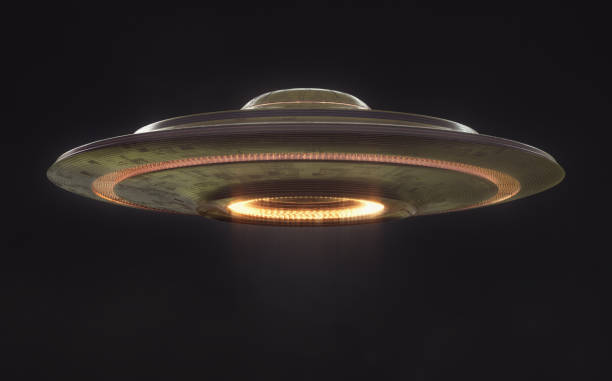

Investigación Ovni


Los ovnis, siglas en español de "Objetos Voladores No Identificados",

son objetos o fenómenos aéreos que son observados en el cielo y no
pueden ser claramente identificados por los testigos como aeronaves
convencionales, globos, o cualquier otro objeto conocido. Los informes
de OVNI a menudo implican avistamientos de luces extrañas, formas
inusuales, movimientos erráticos o velocidades sorprendentes que
desafían la explicación convencional.
Los OVNIs han capturado la imaginación pública y se han convertido
en un tema recurrente en los medios de comunicación, la cultura popular
y la literatura. El tema ha generado numerosos documentales, series de
televisión, películas y libros que exploran el misterio de los OVNIs.
Esta fascinación constante demuestra su relevancia en la cultura contemporánea.
Esta web se propone analizar estos relatos, considerando diversas perspectivas y evidencias, con el fin de arrojar luz sobre la verdadera naturaleza de los OVNIs y proporcionar una solución fundamentada y científica a este enigma que ha desconcertado a la humanidad durante décadas.